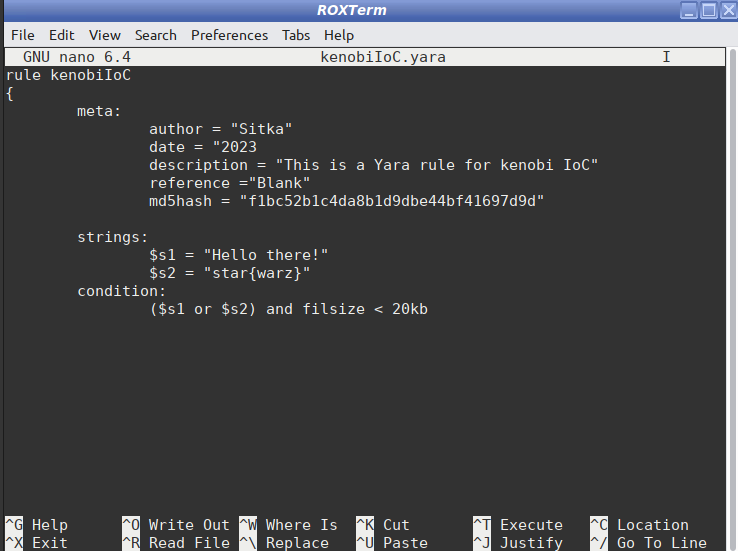

Threat Detection with YARA
Skills we will:
• Identify fundamental file Indicators of Compromise (IoCs)
• Develop YARA rules from scratch
• Generate YARA rules efficiently using yarGen
• Validate and test YARA rules effectively using Arya
In this Project we will learn how to identify potential threats by collecting Indicators of Compromise (IoCs) from simulated malicious files. Create YARA rules, generate detection rules using yarGen, and validate them with Arya. This experience provides essential skills in threat detection.
For this Project we will need:
Repo for YARA: https://github.com/VirusTotal/yara
We can Just type “yara” in the command line, if you don’t have it, it should prompt you to download it. Select ‘Y’ for yes on both questions it prompts you with.
Or use git clone https://github.com/VirusTotal/yara
Repo for yarGen: github.com/Neo23x0/yarGen
Run the following commands from your shell:
mkdir ~/tools && cd ~/tools
git clone https://github.com/Neo23x0/yarGen.git
Repo for Arya: github.com/claroty/arya
For this one, make sure you're in your ~/tools directory still.
git clone https://github.com/claroty/arya.git
Repo for labscript: https://github.com/Jayteaare/labscript.git
clone https://github.com/Jayteaare/labscript.git
**This will create a folder called labscript, with a file inside by the name of lab.sh.
One last thing:
I will be utilizing a Virtual Machine deployed in VMware and opting for the Linux distribution AntiX due to its low RAM consumption.
IoC Colletion
To begin, navigate to the directory where you saved the file, then type the following command
bash lab.shNavigate to your Desktop and you shall see a new file. For this lab, we’ll put ourselfs in a position where an end user noticed a suspicious document on their desktop and our job is to run analysis on this to make indicators of compromise (IoCs).
First, right click the file and go to properties. The initial things we can get for IoCs are the name of the file, the extension, file path, and size in bytes.
So far here is our IoC list:
• File name and type: kenobi.txt
• File path: /home/Sitka/Desktop
• Size: 24 bytes
• Modify Time: 10:18:19 10 Aug 2023
Now, let's utilize the 'strings' tool on the file. The 'strings' tool is designed to extract sequences of characters that form 'human-readable' strings. Often, running this tool results in a large amount of nonsensical characters. To cultivate good practice, we'll redirect the text output generated by this tool into a new .txt file.
In reality, since this is a text file, you could simply use the 'cat' command to display its contents or open it in a text editor. However, when dealing with actual malicious files, especially executables, it's crucial to employ the 'strings' tool.
Run the following command:
strings kenobi.txt > kenobistrings.txt
Afterward, run the 'cat' command on the newly created 'strings .txt' file. This will allow us to observe the text that the file contained:
“Hello there! star{warz}”
Current list of IoC:
• File name and type: kenobi.txt
• File path: /home/Sitka/Desktop
• Size: 24 bytes
• Modify Time: 10:18:19 10 Aug 2023
• Strings: “Hello there! star{warz}”
Now, let's obtain the MD5, SHA-1 and SHA-256 hash for the file using the following commands:
md5sum kenobi.txt
sha1sum kenobi.txt
sha256sum kenobi.txt

As a standard practice, I ensure to acquire the MD5, SHA-1, and SHA-256 hashes of any file I'm working with. This approach serves as a proactive defense against collision attacks. A collision attack is a type of cryptographic attack where two distinct inputs yield the same hash value (known as a hash collision) when processed through a hash function. Hash functions are designed to convert variable-length input data into fixed-length hash values. In cryptographic applications, these hash values should ideally be unique for different inputs. However, due to the finite hash output space and the inherent characteristics of hash functions, there exists a theoretical possibility for disparate inputs to generate the same hash value.Therefore this practice helps mitigate the risks associated with collision attacks and reinforces the security of data integrity.
Current List of IoC:
• File name and type: kenobi.txt
• File path: /home/Sitka/Desktop
• Size: 24 bytes
• Modify Time: 10:18:19 10 Aug 2023
• Strings: “Hello there! star{warz}”
• MD5 Hash: f1bc52b1c4da8b1d9dbe44bf41697d9d
• SHA-1 Hash: acf20e2e687005925149527e979220d21ded5696
• SHA-256 Hash: a6592f3b045c0bd897899a25b3b0b10a4c8444e28764cfcf2717dee1b67d3ecb
Yara Rule Creation:
To craft an Yara rule, we first have to create a file witg tge YARA extension
nano kenobiIoC.yara
Executing this command will initiate the nano text editor, enabling us to compose the YARA rule.

To exit nano, press 'Ctrl + X', then confirm with 'Y', and finally press 'ENTER'.
Now, we will apply the rule to search for additional files that share the same characteristics.
sudo yara -m -s -r starwars.yara ~/ 2>/dev/null
'-m' feeds the YARA rule file, '-s' displays the strings YARA detected, and '-r' enables recursive searching.
You will likely obtain matches for several files, specifically: kenobistrings.txt, kenobi.txt, kenobiIoC.yara, and lab.sh. We are already familiar with these files. However, there's a new addition: grievous.txt, located within the /home/Sitka/directory.
By now, we have a solid grasp of the fundamental principles behind YARA and its applications. After gathering Indicators of Compromise (IoCs) for a potentially malicious file, we can leverage a YARA rule to perform a comprehensive system-wide scan. This scan aims to identify any other occurrences of these IoCs. This technique can be particularly valuable when you encounter intriguing references to files within strings or similar contexts.
Yara Rule Generation with yarGen
Navigate to the specified file path and you will come across a file named "deathstar.txt". To get there, run the following commands:
cd ~/tools/yarGen/malwarez && ls
This file, "deathstar.txt," will be the one we employ to create another YARA rule. This time, we will be using the yarGen tool.
Similarly to the previous file, in order to create a YARA rule, we need to gather its IoCs (Indicators of Compromise) first. To achieve this, we will use the ‘stat’ command to examine the file's properties.
IoC's:
• File name and type: deathstar.txt
• File path: /home/Sitka/tools/yarGen/malwarez/deathstar.txt
• Size: 90 bytes
Next, we will proceed to search for strings within that file
strings deathstar.txt
IoC's:
• File name and type: deathstar.txt
• File path: /home/Sitka/tools/yarGen/malwarez/deathstar.txt
• Size: 90 bytes
• Strings: VGhpcyBpcyBub3QgdGhlIGRyb2lkIHlvdSBhcmUgbG9va2luZyBmb3Iu O66. DV. LS. #%%%^storm##tropper
To further our investigation, we wil acquire the MD5, SHA-1, and SHA-256 hashes.
md5sum deathstar.txt
sha1sum deathstar.txt
sha256sum deathstar.txt
IoC's:
• File name and type: deathstar.txt
• File path: /home/Sitka/tools/yarGen/malwarez/deathstar.txt
• Size: 90 bytes
• Strings: VGhpcyBpcyBub3QgdGhlIGRyb2lkIHlvdSBhcmUgbG9va2luZyBmb3Iu O66. DV. LS. #%%%^storm##tropper
• MD5 Hash: 046d58458878c1cbafa660dfa497e86c
To navigate into the yarGen folder, execute the following command:
cd .. && ls
After that, run these commands:
pip install -r requirements.txtThese commands will first move you up one directory level, then list the contents of that directory. Then, they will install the required packages specified in the "requirements.txt" file using pip.
Run the following command to generate a YARA rule using yarGen:
python yarGen.py -m ./malwarez/ -o deathstarIoC.yara
After executing this command, a file named "deathstarIoC.yara" will be created in your current directory.
You can open this file using a text editor like nano or vim to examine the contents.
nano deathstarIoC.yara
yarGen was able to automatically generate this rule, significantly enhancing the process of constructing YARA rules. This automation not only accelerates rule creation but also improves their precision.
Now, let's proceed to run this rule using YARA to confirm its functionality:
sudo yara -m -s -r starwarz.yara ./
This command will use the YARA tool to scan for matches based on the "deathstarIoC.yara" rule within the current directory and its subdirectories. The -m flag specifies that the rule is to be used with metadata, the -s flag displays matching strings, and the -r flag enables recursive searching.
This demonstration reveals that, utilizing the IoCs automatically gathered with yarGen, no other file possesses the same set of characteristics.
Yara Rule Testing with Arya
Moving forward, we will craft a YARA rule using provided strings and hex code. Once the rule is complete, we will employ a tool named Arya to verify its accuracy.
Begin by executing the following command within the Arya folder located at ~/tools/arya:
sudo apt update && sudo apt install yara cmake && pip install -r requirements.txt
Now that Arya is installed and ready for utilization, we can proceed to create the YARA rule:
Strings:
• yoda
• grievous
• kenobi
• deathstar
Hex:
• 63 3a 5c 77 69 6e 64 6f 77 73 5c 73 79 73 74 65 6d 33 32 5c 62 6c 61 68 2e 65 78 65
• 62 6c 61 68 2e 64 6c 6c
Other file attributes:
• 491 bytes
•uint16(0) == 0x5a4d
To start, let's explain why each piece of information is important and how it can be useful for creating YARA rules.
In the first part, we talk about "Strings". These are groups of letters and symbols that make sense to people and appear within the file. In a YARA rule it would look like this
rule strings{
strings:
$s1: “yoda”
$s2: “grievous”
$s3: “kenobi”
$s4: “deathstar”
condition:
all of them
}
With the condition “all of them” this rule will search for a file with all of those strings in it. Of course we could use other conditions like “any of them” that would be like a “or” between them all.
The second part pertains to Hex code. This method is a way to represent computer data (binary form) using numerical values. Hex code is particularly useful for identifying specific patterns within files, such as their file type, especially when those files lack regular human-readable words. In this context, we're presented with two Hex codes. Let's delve into the information each one holds. For the first code, we'll exclusively employ the Linux command-line tool "xxd". Meanwhile, for the second code, we'll utilize a tool called "Cyberchef".
1:
2:
In summary, the first Hex code contains a file path to an executable binary named “blah.exe” located at "c:\windows\system32\blah.exe". The second Hex code signifies the name of another executable, “blah.dll”.
We can translate this information for a YARA rule like this:
rule Hex{
strings:
$exe_path: {63 3a 5c 77 69 6e 64 6f 77 73 5c 73 79 73 74 65 6d 33 32 5c 62 6c 61 68 2e 65 78 65}
$dll_name: {62 6c 61 68 2e 64 6c 6c}
condition:
any of them
}
If we want to use boolean conditions to influence our search, YARA uses the same structure as typical boolean logic (and, or, not,...):
rule Hex{
strings:
$exe_path: {63 3a 5c 77 69 6e 64 6f 77 73 5c 73 79 73 74 65 6d 33 32 5c 62 6c 61 68 2e 65 78 65}
$dll_name: {62 6c 61 68 2e 64 6c 6c}
condition:
$exe_path and $dll_name
}
Also, we could use the strings "c:\windows\system32\blah.exe" and “blah.dll”, but we used the Hex code to spice things up.
The third part we have two diferent atributes:
- Size, which is self explanatory
- Here we have an expression, lets break her into pieces.
→ First we have unit16(0), this is a function in YARA that it's used to read a 16-bit (2bytes) unsigned integer from a file at offset 0. Wait what? It's easy, The term "offset 0" refers to the position "(0)" of the file or in this case the start. And from there, he reads the first 16bits, or 2 bytes
→ in second we have 0x5a4d, this is a hexadecimal value that represents the magic number associated with the DOS MZ executable format. What is DOS MZ? DOS MZ is an executable file format used in MS-DOS (Operating system developed by Microsoft for personal computers in 1981), close to what PE are today (Portable Executables, EXE, DLL and other binary executable files).
Now that we comprehend both sides of the expression, let's decipher the condition's significance and explore how we can harness it for our YARA rule. This condition will look like:
rule DOS_MZ {
condition:
unit16(0) == 0x5a4d
}
Now we will create a rule that will identify every file which contains any of the information gathered by the intelligence and then run Arya, with hopes that it will return that the rule has been ‘Triggered’.
To confirm our rule works, we will execute Arya. To achieve this, we will use the following code:
python3 ~/tools/arya/src/arya.py -i <path to your rule> -o youdidit.exe
This is exactly the reason we execute arya, this ARYA rule was outputing an error. If you pay attention to the description parameter inside “meta:”, you will see that i forgot to put " at the start of the sentence. This is a great example on why we always should confirm that our code is alright.
After running arya and fixing the problem we got this output.
Arya's output is designed to give you a summary of which rules were triggered by which files. This approach priotizes efficiency when dealing with numerous rules and files. However, the trade-off is that the output might not provide extensive details about specific content of the triggering files.
sudo yara -r everyInformation.yara ~/ 2>/dev/null
Certainly, we have the option to investigate each occurrence and comprehend the details of these alerts. Moreover, we can delve into crafting more intricate rules involving loops and other advanced techniques. However, for the scope of this project, we have successfully achieved our objectives. We've gained the knowledge and skills to:
• Identify fundamental file Indicators of Compromise (IoCs)
• Develop YARA rules from scratch
• Generate YARA rules efficiently using yarGen
• Validate and test YARA rules effectively using Arya
In this project, we delved into the realm of threat detection using YARA rules. We learned to collect Indicators of Compromise (IoCs) from suspicious files, create YARA rules both manually and with the help of yarGen, and validate these rules using Arya. We gained practical insights into identifying potential threats and crafting rules that enhance our ability to detect them. This project equips us with essential skills in the realm of threat mitigation.